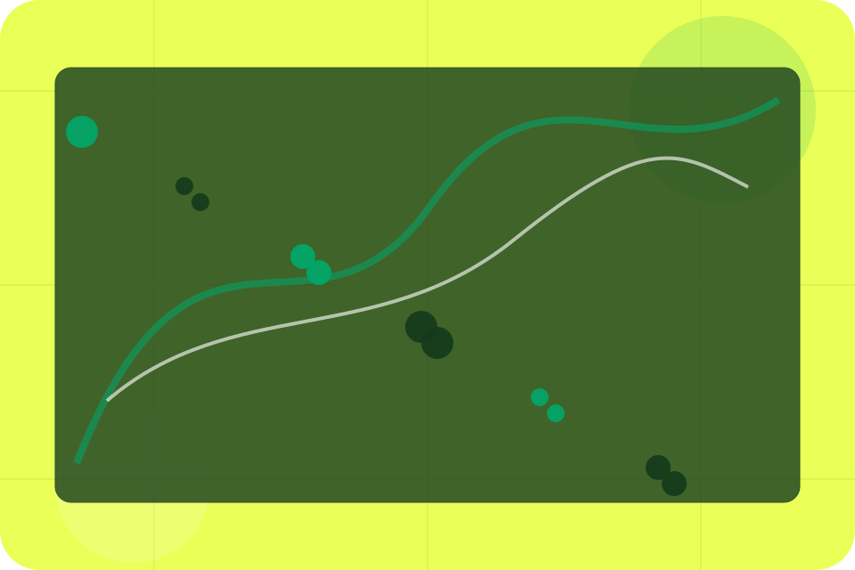
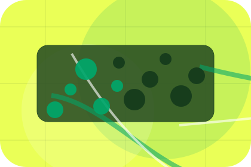
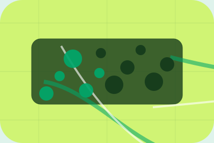

Question
Luggage gives the page a specific angle instead of repeating the navigation label.
FAQ / 01
FAQ opens as a clear transport decision hub: what Ride offers, who it helps, why it matters, and which route to take first.
The first screen combines positioning, proof, primary action, and fast internal navigation, so people can act immediately or compare the rest of the faq route with context.
Green transit planner hero
Select the closest route and Ride keeps the next step, proof, and follow-up expectation aligned with safe reliable movement.

FAQ / 02
Luggage handles buying doubts directly so visitors can understand timing, fit, limits, and the safest next step.
Answers are short by design: enough to remove hesitation, not so much that the page turns into documentation before the visitor can act.
Explore FAQLuggage gives the page a specific angle instead of repeating the navigation label.
The transit route cards show what to compare, what to avoid, and what matters most for transport, mobility & passenger services visitors.
The final cue points to a useful internal route so the section keeps the journey moving.
FAQ / 03
Delays handles buying doubts directly so visitors can understand timing, fit, limits, and the safest next step.
Answers are short by design: enough to remove hesitation, not so much that the page turns into documentation before the visitor can act.
Explore FAQDelays gives the page a specific angle instead of repeating the navigation label.
The transit route cards show what to compare, what to avoid, and what matters most for transport, mobility & passenger services visitors.
The final cue points to a useful internal route so the section keeps the journey moving.
FAQ / 04
Changes handles buying doubts directly so visitors can understand timing, fit, limits, and the safest next step.
Answers are short by design: enough to remove hesitation, not so much that the page turns into documentation before the visitor can act.
Explore FAQChanges gives the page a specific angle instead of repeating the navigation label.
The transit route cards show what to compare, what to avoid, and what matters most for transport, mobility & passenger services visitors.
The final cue points to a useful internal route so the section keeps the journey moving.
FAQ / 05
Cancellations handles buying doubts directly so visitors can understand timing, fit, limits, and the safest next step.
Answers are short by design: enough to remove hesitation, not so much that the page turns into documentation before the visitor can act.
Explore FAQCancellations gives the page a specific angle instead of repeating the navigation label.
The transit route cards show what to compare, what to avoid, and what matters most for transport, mobility & passenger services visitors.

The final cue points to a useful internal route so the section keeps the journey moving.
FAQ / 06
Payments makes commercial comparison easier by showing fit, scope, and terms before transport visitors ask for the next step.
The layout keeps price-sensitive decisions honest: it separates starting scope, fuller delivery, and ongoing support so the visitor can ask a sharper question.
Explore FAQWho the offer is for, which scope it suits, and when a different route may be better.
What is included clearly enough for transport, mobility & passenger services visitors to compare value without hidden jargon.
The practical details that should be confirmed before someone asks to book a ride.
FAQ / 07
Access handles buying doubts directly so visitors can understand timing, fit, limits, and the safest next step.
Answers are short by design: enough to remove hesitation, not so much that the page turns into documentation before the visitor can act.
Explore FAQRide structures access around question, answer, and a clear next route so visitors can compare the block quickly before they book a ride.
Book RideFAQ / 08
Waiting handles buying doubts directly so visitors can understand timing, fit, limits, and the safest next step.
Answers are short by design: enough to remove hesitation, not so much that the page turns into documentation before the visitor can act.
Explore FAQWaiting gives the page a specific angle instead of repeating the navigation label.
The transit route cards show what to compare, what to avoid, and what matters most for transport, mobility & passenger services visitors.
The final cue points to a useful internal route so the section keeps the journey moving.
FAQ / 09
Support explains the practical scope, best-fit situations, and expected outcome so transport visitors can compare options without decoding jargon.
The section keeps the offer concrete: what is included, who it is best for, what decision it supports, and which linked route gives the deeper detail.
Open ContactWho should use support and when it belongs in the faq journey.
FAQ / 10
Ride closes the faq route with a clear action, a quick reminder of the value, and a low-friction way to book a ride.
Visitors who are ready can use the primary action. Visitors who are still comparing can scan the section links, proof, and support routes before they book a ride.
Book RideThe final block keeps the choice simple: act now, compare one more proof route, or send enough detail for a focused response.
Book Ridesafe reliable movement
A passenger mobility site with green route planning, fare estimate cards, map surfaces, and fast booking. FAQ ends with a direct path to book a ride, plus enough context for visitors who still need to compare.

Book RideInformation is provided for planning and should be reviewed for the final client, location, and operating rules.